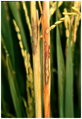
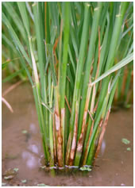
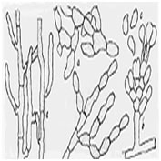
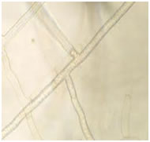
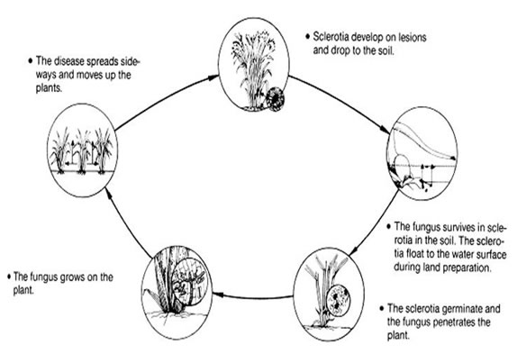

RICE :: FUNGAL DISEASES :: SHEATH BLIGHT
Sheath blight - Rhizoctonia solani (Sexual stage: Thanetophorus cucumeris)
Symptoms
The fungus affects the crop from tillering to heading stage. Initial symptoms are noticed on leaf sheaths near water level. On the leaf sheath oval or elliptical or irregular greenish grey spots are formed. As the spots enlarge, the centre becomes greyish white with an irregular blackish brown or purple brown border.
Lesions on the upper parts of plants extend rapidly coalesing with each other to cover entire tillers from the water line to the flag leaf. The presence of several large lesions on a leaf sheath usually causes death of the whole leaf, and in severe cases all the leaves of a plant may be blighted
|  |  |
The infection extends to the inner sheaths resulting in death of the entire plant. Older plants are highly susceptible. Plants heavily infected in the early heading and grain filling growth stages produce poorly filled grain, especially in the lower part of the panicle.
Pathogen
The fungus produces septate mycelium which are hyaline when young, yellowish brown when old. It produces large number of spherical brown sclerotia.
|  |  |
Favourable Conditions
- High relative humidity (96-97 per cent), high temperature (30-32˚C).
- Closer planting.
- Heavy doses of nitrogenous fertilizers.
Disease cycle
The pathogen can survive as sclerotia or mycelium in dry soil for about 20 months but for 5-8 months in moist soil. Sclerotia spread through irrigation water. The fungus has a wide host range.
|  |
Management
- Grow resistant varieties like Mansarovar, Swarau Dhan, Pankaj etc.
- Apply organic amendments viz., neem cake @ 150Kg/ha or FYM 12.5 tons/ha. Avoid flow of irrigation water from infected fields to healthy fields.
- Deep ploughing in summer and burning of stubbles.
- Spray Carbendazim 500 g/ha
- Soil application of P.fluorescens @ of 2.5 kg/ha after 30 days of transplanting (product should be mixed with 50 kg of FYM/Sand and applied).